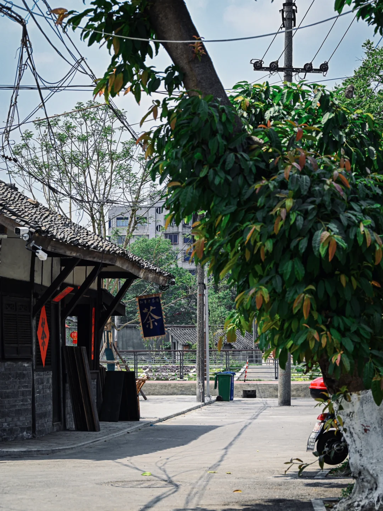
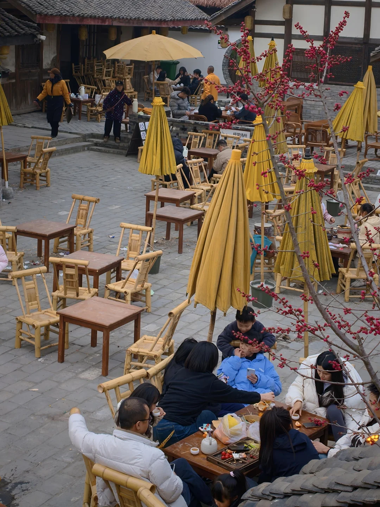
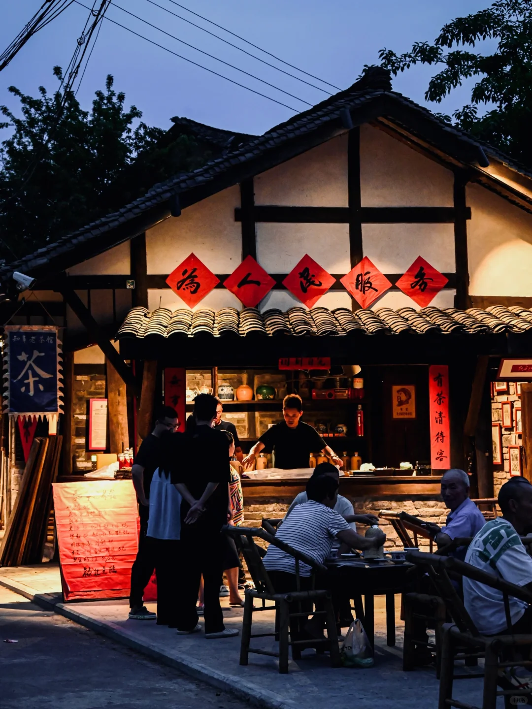
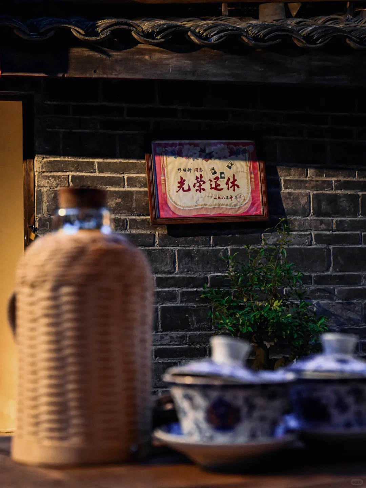

从黑塔街开始
四川省德阳市广汉市金雁街道黑塔街

在巷道与院坝里，把一杯茶喝成一个广汉午后。
黑塔街是一处正在延续城市记忆的老街。街巷更新带来了茶空间与新的生活场景，而最好的打开方式，依然是步行、观察，再找一张竹椅。

从街边向巷内走，看屋檐、店招和行人如何把城市空间变成日常。走公共通道，给居民留出通行的位置。

入座前先问清消费方式，按自己的习惯点茶。可以观察茶具和座椅，也可以什么都不做，听一会儿周围的声音。

若天气合适，傍晚再看一次街巷。门窗、灯光与人的活动，会让同一条街有另一种表情。

找一处有意思的店招、院坝或门窗，想想它怎样被使用。
留意茶杯、脚步和街边交谈，感受景区之外的城市节奏。
想拍摄人物或店内细节，先征得对方同意。
留一段不拍照的时间，真正坐在这座城市里。